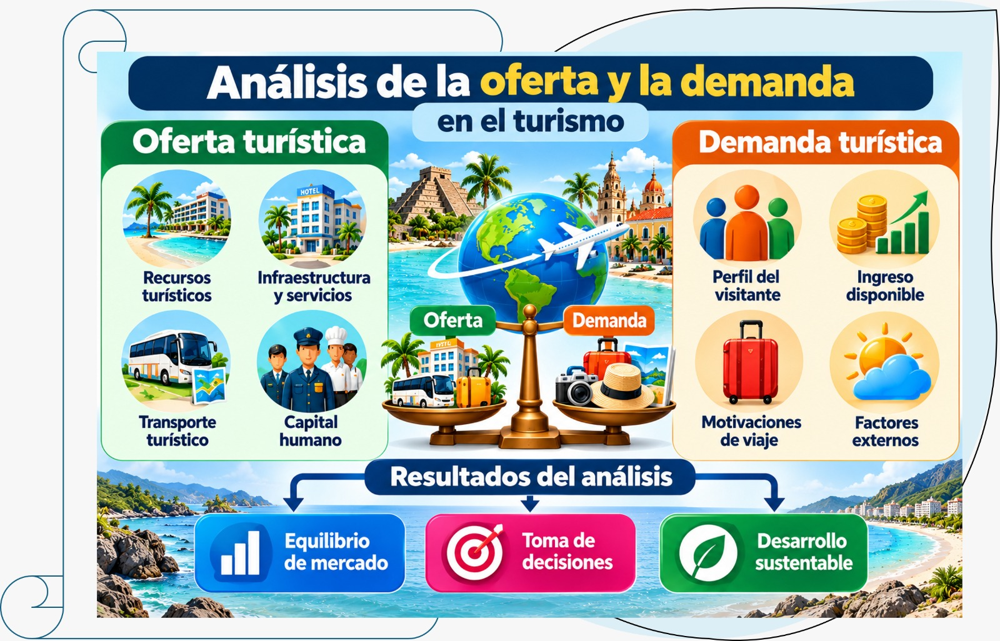

Unidad I · Tema 1.4
Análisis de la oferta y la demanda
El mercado turístico enfrenta una tensión constante entre la rigidez física de la oferta y la alta volatilidad de la demanda. Comprender sus componentes y factores determinantes es indispensable para gestionar el equilibrio comercial.
1.4.1La oferta turística
La oferta turística es el conjunto de bienes y servicios que se ofrecen en el mercado para satisfacer la demanda de los visitantes. Está integrada por cinco componentes principales :
- Recursos turísticos: atractivos naturales, culturales, históricos y artísticos que motivan el desplazamiento.
- Infraestructura: redes de carreteras, aeropuertos, puertos, telecomunicaciones y servicios públicos básicos.
- Superestructura: equipamiento especializado como hoteles, restaurantes, agencias, parques temáticos y museos.
- Servicios complementarios: servicios bancarios, cambios de divisa, seguros, asistencia médica y comercio en general.
- Capital humano: profesionales y colaboradores con formación especializada en hospitalidad y turismo.
Características de la oferta turística:
- Rigidez: no se puede aumentar rápidamente en el corto plazo; un hotel o un aeropuerto no se construyen de un día para otro.
- Estacionalidad: su nivel de aprovechamiento varía sustancialmente de acuerdo con la época del año.
- Heterogeneidad: cada prestador de servicios entrega un producto diferenciado con estilos y niveles de calidad variables.
- Interdependencia: los prestadores se necesitan mutuamente; el hotel depende del transporte para recibir huéspedes, y el restaurante depende de los recorridos turísticos para atraer comensales.
- Localización inamovible: la oferta está anclada permanentemente a un territorio geográfico específico; el consumidor debe desplazarse hacia ella.
1.4.2La demanda turística
La demanda turística es el conjunto de personas que viajan o desean viajar para satisfacer necesidades de descanso, recreación, cultura, negocios u otros motivos personales. Se caracteriza por :
- Motivaciones diversas: esparcimiento, turismo cultural, aventura, salud y bienestar, negocios y reuniones familiares.
- Sensibilidad al precio: elasticidad variable según el nivel socioeconómico y el perfil del viajero.
- Estacionalidad: marcada concentración temporal durante fines de semana, puentes y periodos vacacionales.
- Flexibilidad y sustituibilidad: el turista tiene la capacidad de cambiar de destino, fechas o prestadores de servicio ante cualquier inconveniente.
- Influencia de factores externos: altamente condicionada por la economía, la percepción de seguridad, el clima y las tendencias globales.
Tipos de demanda:
- Demanda efectiva (o real): las personas que actualmente viajan y consumen servicios turísticos.
- Demanda potencial: aquellos individuos con capacidad económica y tiempo libre que viajarían si se presentaran las condiciones o estímulos adecuados.
- Demanda diferida: personas que tienen la intención de viajar pero han pospuesto su viaje por motivos temporales (laborales, familiares o de fuerza mayor).
- No demanda: población que carece de interés o recursos para realizar actividades turísticas.
1.4.3Factores que afectan la demanda turística
La fluctuación de los flujos de visitantes responde a múltiples variables del macroentorno:
- A) Económicos: nivel de ingreso disponible, paridad cambiaria, inflación y tasas de desempleo.
- B) Sociales: transformaciones demográficas, incremento del envejecimiento activo, nuevos estilos de vida y modas de viaje.
- C) Políticos: estabilidad institucional, políticas de visado y regulaciones migratorias.
- D) Tecnológicos: penetración de internet, plataformas de economía colaborativa y facilidad de reservas directas.
- E) Ambientales: impacto del cambio climático, temporales y eventos naturales extremos.
- F) Sanitarios: emergencias epidemiológicas y protocolos de bioseguridad.
- G) Psicológicos: percepción de riesgo, seguridad subjetiva y reputación del destino.
1.4.4Equilibrio entre oferta y demanda
El equilibrio de mercado se alcanza cuando la capacidad instalada coincide con el volumen de demanda real. En el turismo este equilibrio es sumamente complejo de mantener debido a que :
- La oferta es rígida a corto plazo (capacidad instalada fija).
- La demanda es volátil y sujeta a oscilaciones abruptas.
- La estacionalidad produce picos con saturación y valles con capacidad ociosa.
- Los factores externos alteran inesperadamente ambas variables.
Herramientas para gestionar el equilibrio:
- Yield management (gestión de ingresos): ajuste dinámico de precios y disponibilidad conforme al comportamiento de la demanda.
- Diversificación de mercados: captación de segmentos corporativos, de eventos o de jubilados durante la temporada baja.
- Estrategias de empaquetamiento: combinación de hospedaje, alimentos y tours a precios atractivos para incentivar el flujo continuo.
- Alianzas colaborativas: trabajo conjunto entre hoteleros, restauranteros y transportistas para comercializar el destino como un todo.
- Comunicación estratégica: campañas promocionales dirigidas con atractivos y beneficios específicos para temporadas valle.

La balanza central representa el equilibrio de mercado: la capacidad que ofrece el destino frente al volumen de visitantes que realmente llega. Herramientas como el yield management, la diversificación de mercados y los paquetes ayudan a nivelarla. Un análisis bien hecho lleva a los tres resultados de la imagen: equilibrio de mercado, mejor toma de decisiones y desarrollo sustentable.
1.4.5Ejercicio resuelto 4: Análisis de oferta y demanda en un destino
Preguntas de análisis:
- ¿Cuál es la oferta de alojamiento disponible?
- ¿Cuál es la demanda real de alojamiento promedio?
- ¿Existe equilibrio en el destino? Justifica la respuesta.
- ¿Qué estrategias de marketing deben formularse para mitigar el desbalance?
Solución técnica:
1. Oferta de alojamiento disponible:
- 500 habitaciones hoteleras. Asumiendo una ocupación doble promedio por habitación, la capacidad máxima es de 1,000 plazas por noche (o 182,500 habitaciones-noche al año).
2. Demanda de alojamiento:
- 60,000 turistas × 2 noches = 120,000 pernoctaciones al año.
- Dividido entre 365 días del año: 120,000 ÷ 365 ≈ 329 habitaciones ocupadas por noche en promedio.
- En términos teóricos anuales representaría 329 ÷ 500 = 65.8% de ocupación, pero la tasa real registrada es del 55%, lo que evidencia días con muy escasa afluencia.
3. Diagnóstico del equilibrio:
No existe equilibrio de mercado. La estacionalidad genera distorsiones severas: en temporada alta la demanda sobrepasa la capacidad operativa (95% con saturación y riesgo de rechazo de reservas), mientras que en temporada baja la oferta ociosa alcanza el 70% de las habitaciones vacías, amenazando la rentabilidad y el empleo de los establecimientos.
4. Estrategias de marketing recomendadas:
- En temporada alta: optimización de tarifas al alza mediante revenue management, programas de fidelización, políticas estrictas para evitar sobreventas y diseño de paquetes premium con valor agregado.
- En temporada baja: promociones preferenciales para residentes de zonas metropolitanas cercanas, paquetes temáticos para parejas, fomento del turismo de congresos y reuniones de fin de semana, y organización de festivales culturales o gastronómicos locales.
- Estrategias anuales transversales: diversificación de la oferta con nuevas rutas y talleres vivenciales, fortalecimiento de la señalética turística, capacitación continua en hospitalidad y gestión activa de reputación online.